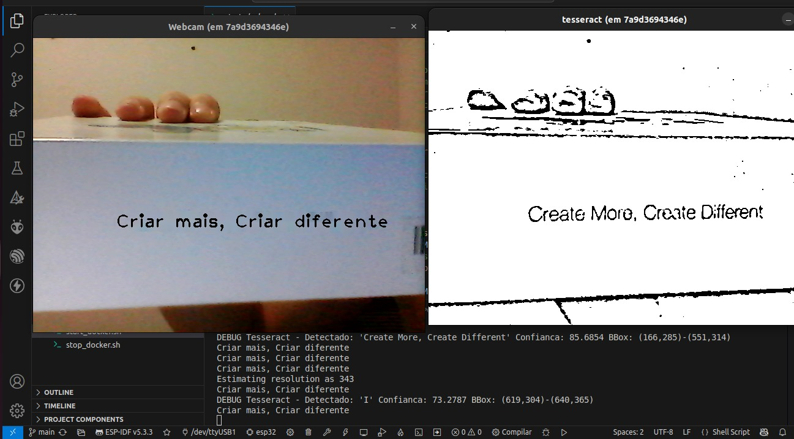
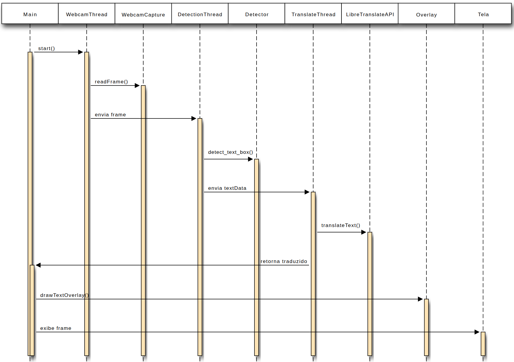

Projeto de Estruturas de Dados Orientadas a Objetos (2025)
O HQ-Translator é uma aplicação de tradução de texto em tempo real desenvolvida em C++ com uma arquitetura orientada a objetos. O sistema é estruturado em classes especializadas que encapsulam as funcionalidades principais: captura de vídeo, detecção de texto, tradução e renderização. A classe de captura utiliza a webcam para adquirir os frames, enquanto outra, baseada no Tesseract OCR, extrai os textos presentes nas imagens. A tradução é gerenciada por uma classe dedicada que se comunica com a API LibreTranslate para converter o conteúdo detectado. Por fim, uma classe de renderização exibe o resultado traduzido sobre o vídeo original.
Para garantir fluidez e desempenho, o sistema aplica o conceito de concorrência utilizando uma arquitetura multi-threaded em pipeline: cada etapa do processo (captura, OCR, tradução) é tratada por um objeto em sua própria thread. Isso permite que as tarefas ocorram em paralelo de forma sincronizada, evitando que a interface congele. Essa organização modular e concorrente melhora a performance, a manutenibilidade e a escalabilidade da aplicação.
Abaixo, uma imagem do HQ-Translator em ação, detectando o texto em uma embalagem e sobrepondo a tradução em tempo real.
Marcelo Henrique: Idealizador do projeto, teve participação contínua em todas as etapas do backend. Coordenou a integração das funcionalidades e implementou o algoritmo de detecção e tradução de texto. Estruturou o pipeline de dados utilizando filas e Threads paralelas, garantindo o desempenho e a escalabilidade do sistema.
Gabriel Nascimento: Responsável pela interface no frontend, também colaborou em diversas outras partes do projeto, sendo peça-chave em sua execução.
Gustavo Ferreira: Iniciou o desenvolvimento do algoritmo de detecção de texto e foi responsável pela implementação da funcionalidade de realidade aumentada, substituindo o texto original por sua tradução em tempo real. Contribuiu de forma significativa com seu conhecimento técnico em orientação a objetos, sendo peça-chave na construção da arquitetura técnica do sistema.
Elinaldo Emanoel: Atuou no desenvolvimento do frontend com Gabriel e esteve presente em praticamente todas as etapas do projeto, contribuindo com a documentação, testes e demais tarefas, mostrando grande envolvimento e proatividade.
Matheus Stepple: Contribuiu para o aprimoramento do pré-processamento de imagens e dos filtros utilizados na detecção de texto. Também aplicou conceitos de orientação a objetos no código, colaborando ativamente para a organização e modularização da solução.
Abaixo, uma diagrama do fluxo do projeto.
